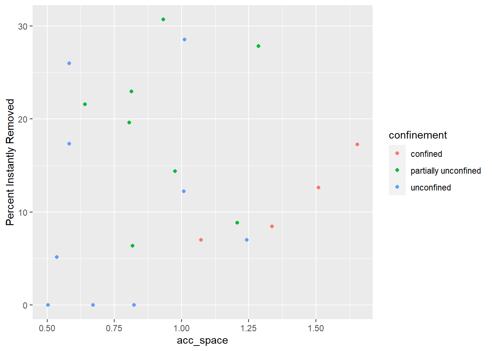

Chapter 5 Grain Size Distribution Plots
For now, this is just documentation of modeled grain sizes for the debris flow fans. I imagine eventually I will use these to compare between sites.
## DF_ID Fire est_D16..phi..2008 est_D16..phi..2011 est_D16..phi..2016
## 1 BH5A Brian Head NA NA 0.6
## 2 BH3 Brian Head NA NA -0.7
## 3 DR1A Dollar Ridge NA NA 1.4
## 4 DR2A Dollar Ridge NA NA 2.0
## 5 DR3A Dollar Ridge NA NA 0.8
## 6 DR4A Dollar Ridge NA NA 1.0
## est_D50..phi. est_D84..phi. est_D84B..phi.
## 1 -4.5 -6.5 -9.5
## 2 -4.1 -5.9 -9.3
## 3 -4.2 -5.6 -9.5
## 4 -4.2 -6.3 -9.5
## 5 -2.9 -4.9 -9.4
## 6 -2.9 -4.8 -9.4## ── Attaching packages ─────────────────────────────────────── tidyverse 1.3.2 ──
## ✔ tibble 3.1.8 ✔ dplyr 1.0.9
## ✔ tidyr 1.2.0 ✔ stringr 1.4.0
## ✔ readr 2.1.2 ✔ forcats 0.5.1
## ✔ purrr 0.3.4
## ── Conflicts ────────────────────────────────────────── tidyverse_conflicts() ──
## ✖ dplyr::filter() masks stats::filter()
## ✖ dplyr::lag() masks stats::lag()
##
## Attaching package: 'magrittr'
##
##
## The following object is masked from 'package:purrr':
##
## set_names
##
##
## The following object is masked from 'package:tidyr':
##
## extract